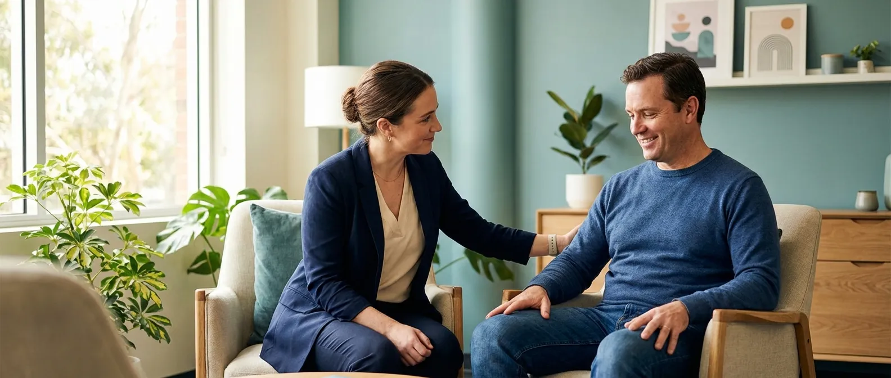
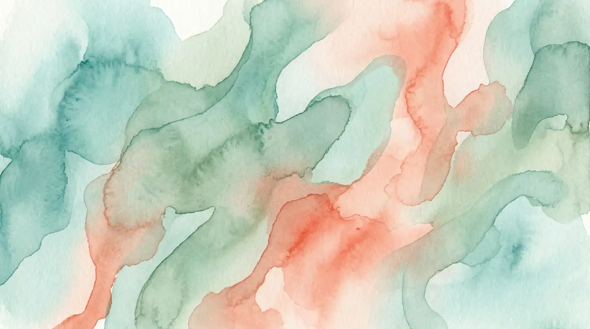

Co-Create
We work alongside you — not for you. Every plan, every goal, every step is built collaboratively using strength-based practice that honours your voice and lived experience.

NDIS Registered Provider
NDIS therapeutic supports and capacity building by an accredited social worker — supporting you across Sydney and Australia.
Our Approach
We work alongside you — not for you. Every plan, every goal, every step is built collaboratively using strength-based practice that honours your voice and lived experience.
Professional advocacy and systems navigation to help you access the services and supports you're entitled to. We build your capacity while walking beside you through complex systems.
We coordinate with your full care team — doctors, support coordinators, case managers, and families — to ensure seamless, wraparound support that leaves no one behind.

What We Do
Comprehensive allied health support tailored to your unique circumstances — from crisis intervention to long-term capacity building.
Trauma-informed mental health support, crisis intervention, and psychosocial assessments designed to address the whole person — not just the diagnosis.
iCare-funded discharge planning and community reintegration support. We bridge the gap between hospital and home to ensure safe, sustainable transitions.
Housing navigation, NCAT applications, and SDA/SIL transition support. We help you find and maintain safe, appropriate accommodation.
Capacity assessments, tribunal reports, and guardianship applications. Expert navigation of legal frameworks that affect your rights and decision-making.
Hospital-to-aged-care pathways and residential placement decisions. Compassionate support through one of life's most significant transitions.
Psychosocial disability services including family mediation, substance use support, and systems advocacy for people navigating complex mental health challenges.
AASW-accredited clinical supervision for social workers. Reflective, supportive sessions that strengthen your professional practice and meet registration requirements.
Supervised student placement opportunities for emerging social work professionals. Real-world experience in a supportive, trauma-informed learning environment.
Expert case consultation for allied health professionals navigating complex client situations. Fresh perspectives grounded in evidence-based practice.

About Us
Create Allied Health Services is led by Kate Engledow, Clinical Director, PhD candidate, and accredited member of the Australian Association of Social Workers. Kate brings deep clinical expertise in psychosocial support, aged care transitions, and complex disability services.
Our Sydney-based, NDIS-registered practice delivers person-centred allied health support across Greater Sydney and nationally via telehealth. We work with clients across the Inner West, Western Sydney, Eastern Suburbs, Northern Beaches, South East Sydney, South West Sydney, and Sutherland Shire, as well as partnering with private and public hospitals across Greater Sydney.
Whether you're a client seeking support in Sydney, a professional looking for clinical supervision, or an organisation wanting to partner — we'd love to hear from you. Face-to-face across Greater Sydney, telehealth nationally.